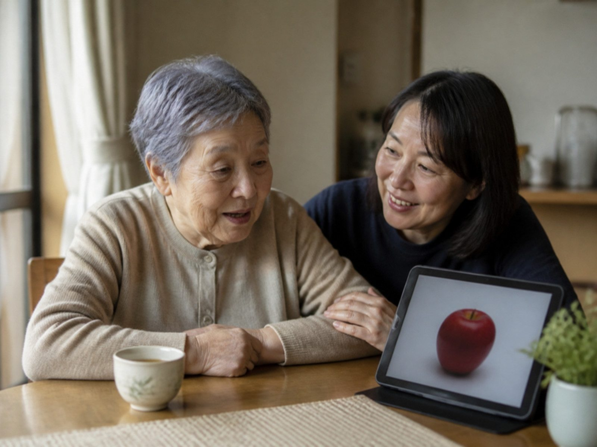
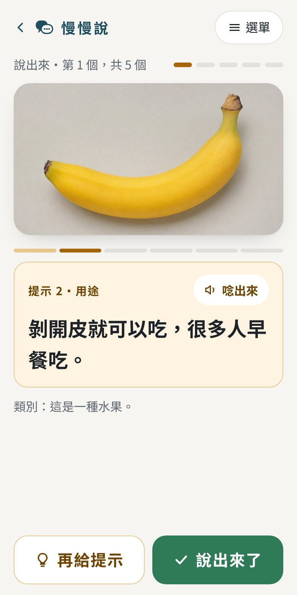
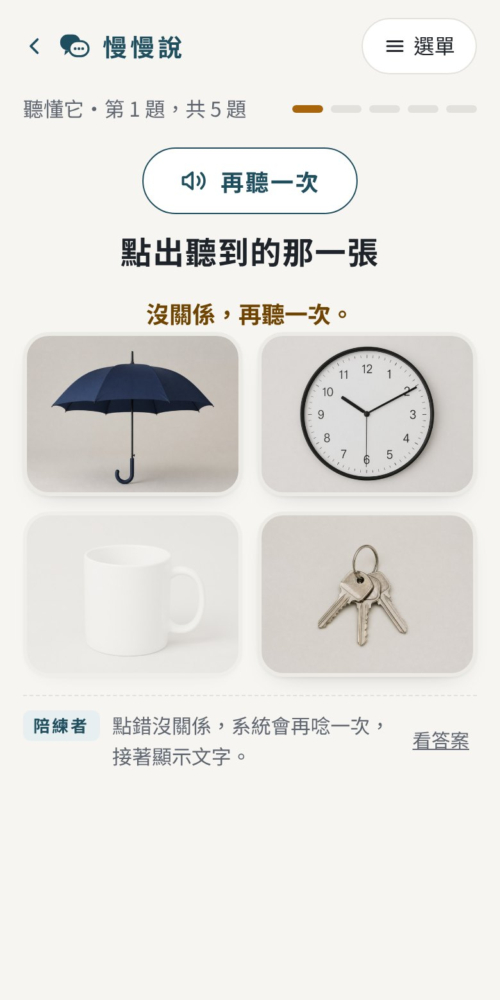
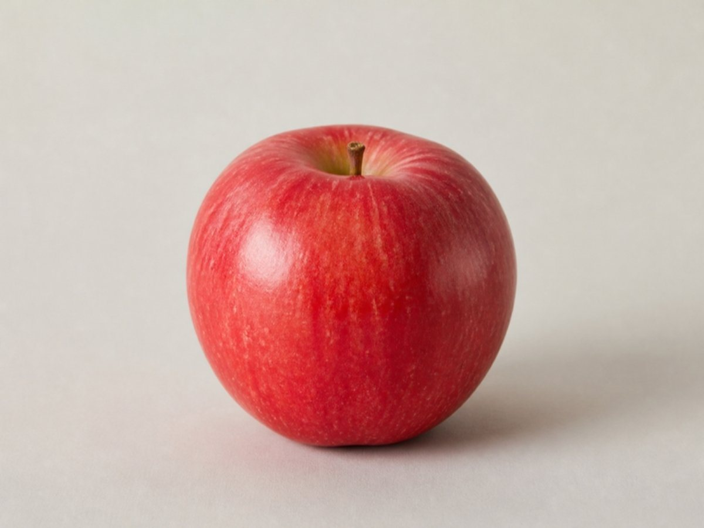

失語症是什麼？
失語症是大腦負責語言的區域受損後，出現的語言障礙，最常見的原因是中風。它可能影響說話、聽懂、閱讀和書寫，但通常不影響智力。長輩心裡知道想說什麼，只是語言一時出不來。
失語症居家練習
中風後，常常想得到卻說不出來，或是聽了會錯意。等你說陪你在家和長輩一起練：看照片說名稱、聽聲音選照片，答不出來時，一步一步給提示。

先看看長輩的狀況
東西就在眼前，
卻叫不出名字。
知道杯子是做什麼的，就是一時說不出名字。這是找詞困難，最常見的一種。
常見於命名型失語症
聽得懂，
但說話很費力。
話很少，想說卻說不出口，常常只說一兩個字。多等幾秒，第一個字的提示常常有用。
常見於非流暢型，例如布洛卡失語症
說得很流利，
但詞常常不對。
也常聽錯：請他拿眼鏡，他拿了遙控器，自己不一定發現。先從聽懂開始，說話短一點、慢一點。
常見於流暢型，例如威尼克失語症
幾乎說不出來，
也聽不太懂。
先請語言治療師評估。在家可以從「是不是」的問題、指照片和手勢開始，每次練短一點。
可能是全面型失語症，或還在剛發病的階段
不用自己判斷是哪一型，看長輩平常的樣子選最像的就好。很多長輩同時有好幾種情況，練哪一種請以語言治療師的建議為主。陪練小抄第 2 頁有每一種的調整方法。
練習畫面
字大、按鈕大，長輩看照片就好；給提示、記錄的工作交給陪練的家人。


兩種練習，每次 5 題
答不出來時
不急著說出答案。先從意思幫忙，最後才給字音和示範。你可以按按看，體驗長輩練習時看到的提示。

前三個提示（類別、用途、外觀）從意思出發，參考語意特徵分析（SFA）的做法。長輩一說出來就停，不用把六個都給完。
給陪練的家人
方法依據
答不出來時，從最少的幫忙開始，再一層層增加。這是失語症找詞練習常用的提示層級做法。
Linebaugh & Lehner, 1977
前三層提示帶長輩想類別、用途和外觀，透過相關的意思把詞找回來，參考語意特徵分析（SFA）。
Boyle & Coelho, 1995
治療課的時間有限，回家固定練習，可以增加練習的次數。每次 5 題，容易每天做到。
建議與語言治療師討論練習量
短句、大字、大按鈕，一個畫面一件事，搭配真實照片和語音，減少閱讀和操作的負擔。
參考失語症友善資訊設計原則
家人在旁陪練、給提示、稱讚，讓練習變成日常的溝通，而不是考試。
陪練原則見上方
不用註冊，紀錄只存在這台裝置。練完可以複製摘要，傳給語言治療師參考。
不收集個人資料
參考資料：Boyle, M., & Coelho, C. A. (1995). Application of semantic feature analysis as a treatment for aphasic dysnomia. American Journal of Speech-Language Pathology, 4(4), 94–98.・Linebaugh, C. W., & Lehner, L. H. (1977). Cueing hierarchies and word retrieval: A therapy program. Clinical Aphasiology Conference Proceedings, 19–31.
詞彙與提示內容正在請語言治療師審閱。照片為 AI 生成。
認識失語症
失語症是大腦負責語言的區域受損後，出現的語言障礙，最常見的原因是中風。它可能影響說話、聽懂、閱讀和書寫，但通常不影響智力。長輩心裡知道想說什麼，只是語言一時出不來。
找詞困難是失語症最常見的情況之一：知道東西是什麼、怎麼用，卻叫不出名字，話到嘴邊說不出來。看圖說名稱，加上由少到多的提示，是常用的練習方式。
有些長輩主要是說的困難，說話費力、常找不到詞；有些主要是聽的困難，聽不懂或答非所問；很多人兩種都有。實際狀況要由語言治療師評估，等你說因此分成說出來和聽懂它兩種練習。
想更深入了解，可以閱讀失語症與中風溝通衛教。
等你說練習圖卡・準備中
有些長輩不習慣看螢幕，有些家庭想在餐桌上、病房裡隨手就練。等你說圖卡把網頁上的練習做成拿得到的卡片，正面是照片，背面是六層提示。
買了就能下載，自己在家印。名詞 48 張、動作 24 張、選圖板 12 張、短句 12 張、家人卡 6 張，附陪練指南。
硬卡紙、可以擦拭，適合長期使用，也適合照護機構和治療室。
| 網頁練習 | 免費試用圖卡 | 完整版圖卡 | |
|---|---|---|---|
| 詞彙 | 24 個 | 6 個 | 名詞 48、動作 24、短句 12 |
| 念出聲音 | 會 | 由陪練的人念 | 由陪練的人念 |
| 不用手機 | 需要 | 不用 | 不用 |
| 陪練指南、紀錄 | 練習摘要 | 簡易版 | 完整指南與紀錄表 |
| 費用 | 免費 | 免費 | 開賣時公布 |
常見問題
先確認長輩已經就醫，並由語言治療師評估。在家可以每天花 5 到 10 分鐘，用照片請長輩說出名稱；說不出來時，先等幾秒，再從類別、用途、外觀等意思提示開始，最後才給第一個字或示範。說錯不糾正，直接示範正確的詞，累了就停。
可以，在家練習能增加練習的次數，但最好有家人在旁陪練，並配合語言治療師的建議。等你說是練習輔助工具，不能取代語言治療。
提示的方法大致相同，但重點不一樣。說話費力、話很少的長輩（常見於非流暢型），多練說出來，多等幾秒，第一個字的提示常常有用。說得流利但詞常常不對、也常聽錯的長輩（常見於流暢型），先練聽懂它，說話短、慢，把關鍵的詞寫出來。不用自己判斷是哪一型，看長輩平常的樣子調整，並以語言治療師的建議為主。
適合中風或其他原因造成失語症、能坐著專心幾分鐘的長輩，由家人在旁陪練。如果長輩還在急性期，或容易疲倦、情緒起伏大，請先和醫療團隊討論。
可以，但建議先問治療師。治療師最清楚長輩適合練哪些詞、給到第幾個提示。你也可以把練習摘要傳給治療師參考。
不一定。同一個詞從需要 5 個提示，變成 3 個，也是進步。紀錄是用來看長期的變化，不是每一次的成績。
網頁練習和免費資源都不用付費，也不用註冊。練習紀錄存在你這台手機或電腦的瀏覽器裡，我們看不到也收不到；換裝置或清除瀏覽器資料，紀錄就會不見。網頁練習會一直免費。
內容和提示方式一樣。網頁會念出聲音、自動記錄；圖卡不用手機，適合不習慣看螢幕的長輩，或想在餐桌、病房隨手練的家庭。可以先下載免費試用圖卡，看看長輩比較喜歡哪一種。
可以。免費資源歡迎印給個案家屬做衛教。若想在機構裡長期使用，可以等實體卡盒推出；也很歡迎告訴我們你希望收錄哪些詞。
聲音使用的是手機或電腦內建的語音。請確認沒有開靜音、音量已調大；部分 Android 手機需要在設定裡安裝中文語音。聽不到時，也可以由陪練的人自己念。
按右上角的「選單」，在「字的大小」選「大」或「特大」。